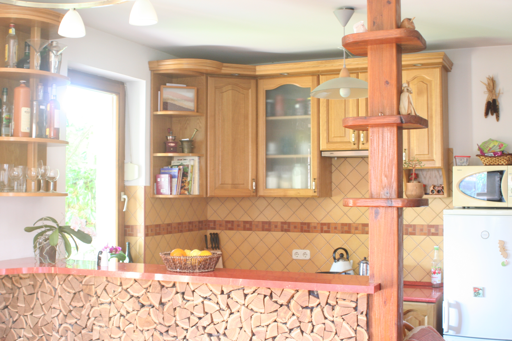

HOL IS VAN?
A Telek
Ezt a házat akkor vedd meg, ha szereted a szabadságot, a természetet, és ugyanakkor közel akarsz lenni a civilizáció és Budapest előnyeihez.

A társasház és a mellette lévő beépíthető telek Dunakeszi régi városrészében a Felsőtabánban található közvetlenül a Duna ártere mellett, Dunakeszi Pest felőli végén. A Felsőtabán egy dombos-kanyargós utca, ahol 100 éves hangulatos kis házak és az utóbbi 10 évben épült igényes társasházak váltják egymást. Orvosi rendelő és buszmegálló 150 méterre, két nagyobb bolt 5 perc sétára, az Árpád-híd kocsival 20 perc, ha elkerülöd a dugót.
KILÁTÁS
Örök panoráma
A társasház 2007-ben épült Hegedűs Tamás, Dunakeszi akkori főépítészének tervei alapján. A 2008-as válság miatt a 4. lakás nem épült meg, így annak telekrészét, terveit és engedélyeit megvettük. Ez egy örökpanorámás telek melynek tervrajzait és építési engedélyét is eladjuk neked. És igen, ott a képen Szentendrét látod a távolban, és a kapun kilépve már kezdheted is a reggeli futást a Duna partján.

KÍVÜLRŐL
Nyugati homlokzat
Ez egy ideális hely gyerkőcöknek, medencealappal, homokozóval, tűzrakó hellyel, kerti zuhannyal. Mi négy gyereket neveltünk itt fel, és pont emiatt kell elköltözünk, hiszen kinőttük a szeretett kis házunkat. Ezen a képen a nyugati bejáratot látod, de van a keleti oldalon is egy teljes értékű bejárat, így tűzeset szempontjából biztonságosabb a ház.

AUTÓ
Kocsibeálló
A Duna felől egy automata kapun keresztül, akár több autóval is beállhatsz. Ezen a képen jobban láthatod a gyerekek homokozóját és a kerti zuhanyt is, ami alá nyáron a gyerekmedencét szoktuk tenni, és amin az év többi részében pedig lengőtekézni is lehet.

VADSZŐLŐ
Hűs beszélgetőhely
A konyhaablak alatt egy vadszőlővel árnyékolt hűsölőnk van, ahol nyáron reggelizhetsz, vagy este a barátaiddal borozgathatsz. Sünök, fekete rigók és vörösbegyek is gyakran becsatlakoznak a mókába.
TŰZ
Grillező és kerti csap
Látod a tűzrakóhely mögött azt a kis építményt? Na, abban van a meg nem épült negyedik ház közművei: áram és víz külön mérőórákkal, és persze a szennyvízelvezető. Tehát ha úgy döntesz, hogy mégis felépíted a negyedik házat, akkor innen kell majd indulnod.

NEGYEDIK
Engedélyezési terv
Annyit emlegettük már, hát álljék itt a meg nem épült ház engedélyezési terve. A főépítész úr ezt magának tervezte, ami szintén egyfajta garancia...
BELÜL
Kandalló
Az előszoba után a nappaliba lépsz, ahol egy kandalló teszi otthonossá és télen meleggé a lakást.

FŐZŐCSKE
Konyha
Balra fordulva a reggelizőpulton túl találod a kis konyhát, aminek a bútorait a lakással együtt adjuk. 
Talán innen kicsit jobban látszik.
BELJEBB
Nappali
Ha beljebb lépsz, a nappaliban találod magad, ahol egy organikus könyvespolcot hagynánk itt.
Folyosó
Másik bejárat
A könyvespolc a folyosón folytatódik, ami a ház keleti bejáratához vezet. Ha úgy döntesz, hogy felépítitek a negyedik házat, vagy eladjátok a Duna-felőli telket, akkor ezen az ajtón tudtok majd bejárni.
Ezen a folyosón van az egész család ruhásszekrénye is, ahova mindent el lehet rejteni, amit nem akartok látni.
FELFELÉ
Lépcső
Széles, kényelmes lépcső vezet az emeletre. A lépcső alatti helyiségben kis műhelyt alakítottunk ki, ami akár lomtárnak, dolgozószobának, és ki tudja még mire is jó lehet.
FENT
Fürdő
A fürdőszoba kisgyerek-barát, külön kis mosdót kaptak az apróságok.
SZUNDI
Gyerekszoba
Itt alszanak az aprónépek.
A másik oldalról az íróasztalaik is látszanak.
MOZI
Háló
A negyedik gyerkőcöt már csak a szülői hálóba bírtuk betuszkolni, persze anélkül a kiságy nélkül sokkal kényelmesebben elférnénk...
A legtöbb falat bordóra festettük, így egész jó kis mozit tudtunk kialakítani a szobából. Az ágy fölötti polcon van a projektor, aminek a vezetékei a polc belsejében futnak. Ha te is így szeretnéd berendezni a szobát, szívesen itt hagyjuk ezt a polcot.
ALAPRAJZOK
A ház beosztása
A lakást még a tervrajzok alapján vettük meg, így lehetőségünk volt úgy alakítani a válaszfalakat, hogy az egy kétgyermekes család igényeit teljesen kielégítse. Azóta persze mi hatan lettünk így már alig férünk el ebben a 80 négyzetméteres házikóban.
Az emeleten vannak a hálószobák, és innen nyílik egy terasz is, ahol nyáron jót lehet aludni, és a ruhaszárítás könnyen megoldható.
TÁRSASHÁZ
Tulajdonviszonyok
Említetettem már, hogy ez egy háromlakásos társasházban egy lakás. Hadd nyugtassalak meg, nem fogod őket észrevenni, mert teljesen külön bejárat van a nyugati oldalon. A földszinten egy kedves néni él egyedül, az emeleten pedig egy szimpatikus fiatal pár, akik most várják az első babájukat. Mivel a negyedik ház udvarát is megvettük, ezért a társasházban 51% szavazati jogunk van, tehát praktikusan az történik, amit mi akarunk. A lenti kép a társasház alapítóokiratából egy lap, ami azt mutatja, hogy a 333 négyzetméteres udvart csak mi használhatjuk.

SZÁMOK
Adatok
Ha idáig eljutottál, akkor biztosan érdekelnek a nyers adatok is. A helyrajzi szám 5129/A/3 és 5129/A/4. A terület 30% beépíthetőségű, és ahogy már emítettem a 51% szavazati jogunk van a társasházban. A ház teljesen tehermentes, és 49 millióért hirdettük meg, de ha szimpatikus vagy ez olcsóbb is lesz. Szeretnénk, ha jó kezekbe kerülne...